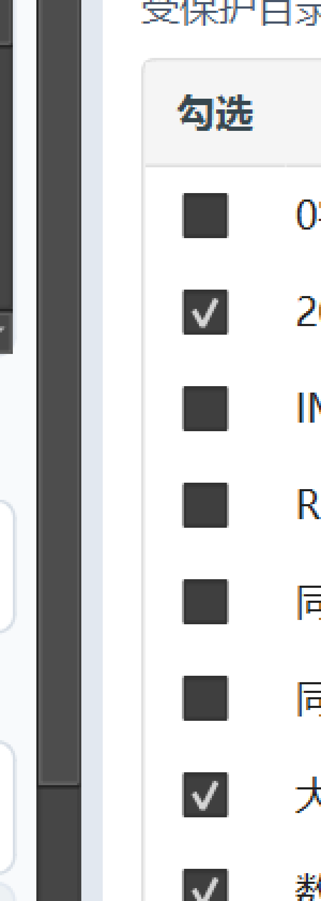
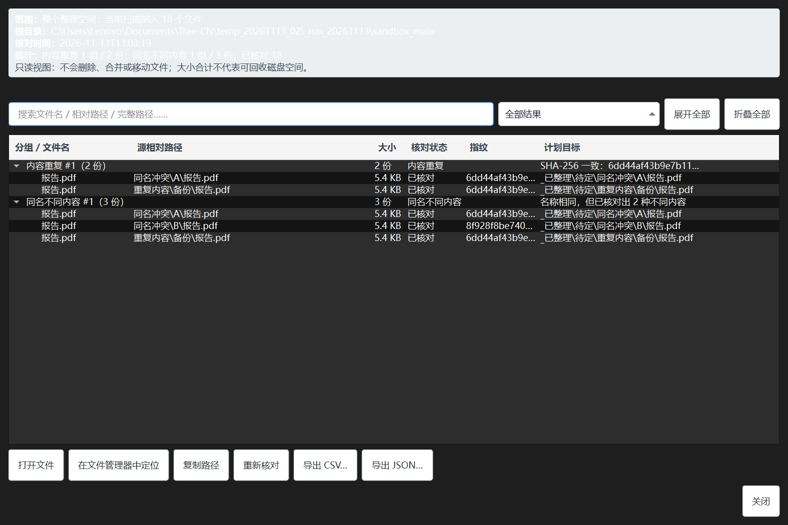
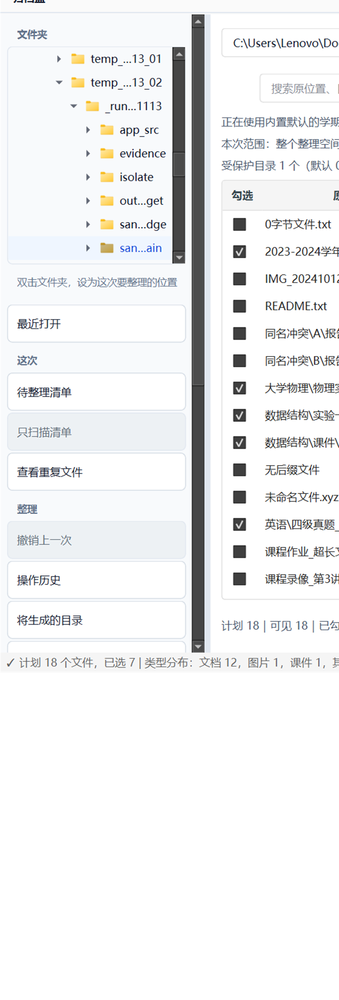
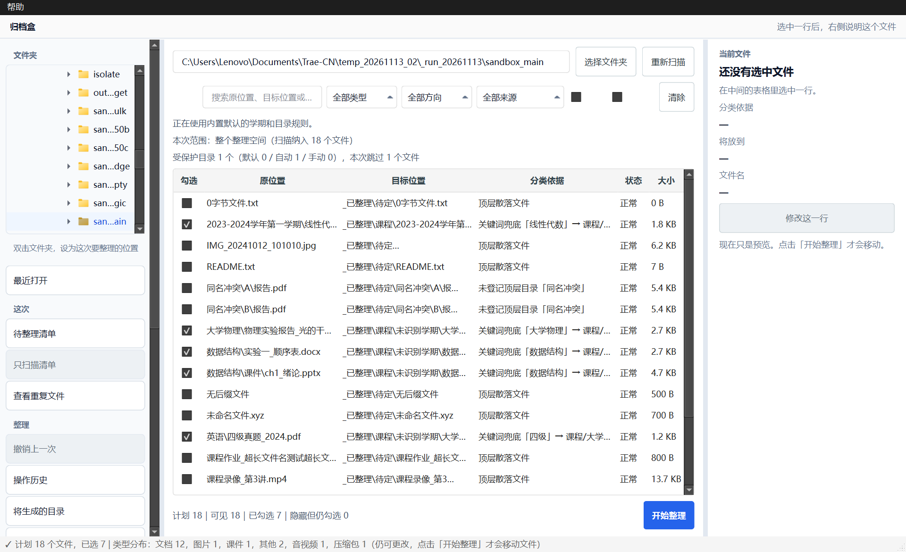
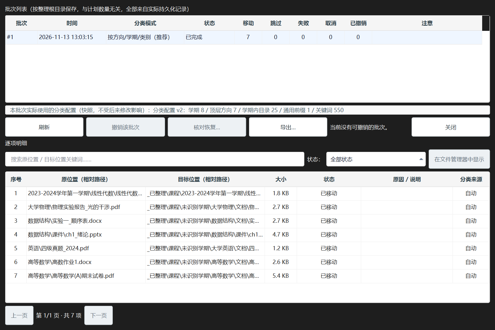
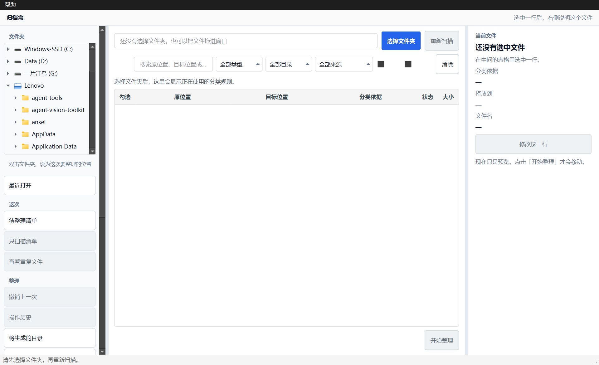
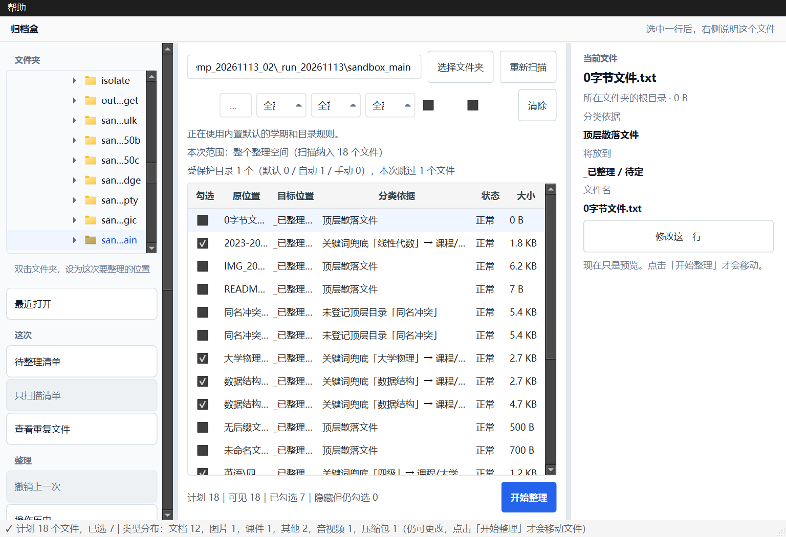
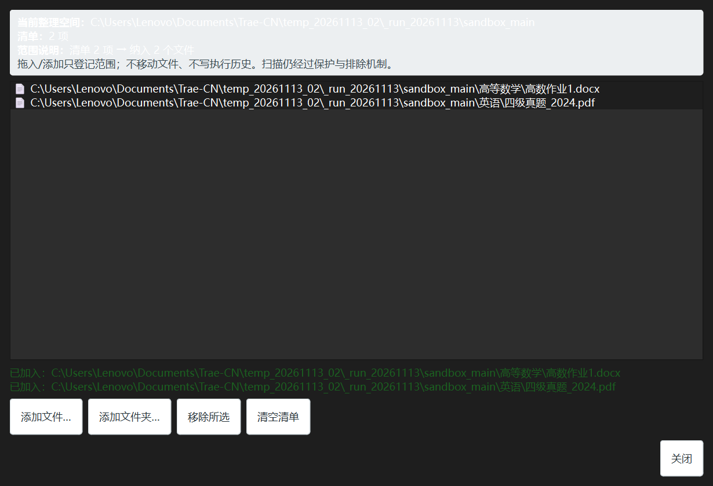
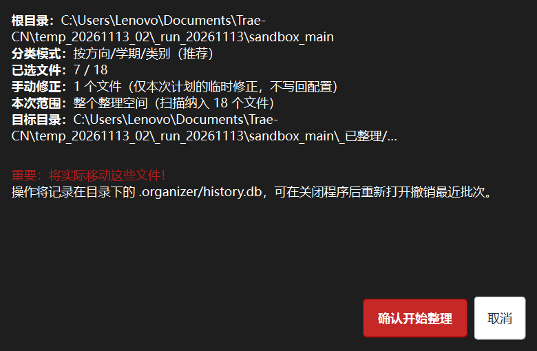

结论：bug 还没有修完。主流程（扫描 → 预览 → 修正 → 整理 → 历史 → 撤销 → 重复查看 → 待整理清单）可以完整走通，近几轮修复的确认框默认安全、junction 跳过、部分撤销提示等在实测中成立；但仍有 2 个高危问题（撤销可谎报成功并让剩余文件永久失去撤销入口；根目录被误判为项目导致整目录无法整理），以及 深色主题下多处文字/勾选框不可读、分类结果与用户直觉冲突等一批中等问题。
| 被测源码 | C:\Users\Lenovo\Documents\Trae-CN\temp_20261113_01\_work\归档盒源码（HEAD 7081113，P0/P1/P2 修复后的当前版本；测试用快照 _run_20261113\app_src，main.py SHA-256 1B2F9FBC…D32E52） |
| 运行时 | 原生 Windows 11，Python 3.14.8 + PySide6 6.12.0（免安装包 runtime），系统缩放 150%，系统为深色主题；未使用 offscreen / WSL |
| 隔离 | ARCHIVEBOX_RECENT_FILE / ARCHIVEBOX_APP_DIR / ARCHIVEBOX_SCHEME_DIR 全部指向测试目录；沙箱目录独立创建，不触碰真实课程资料 |
| 驱动方式 | 从产品生产入口启动（同一套 QSS、启动日志、MainWindow）；真实鼠标点击按钮/复选框、真实弹出模态框并由看护定时器点击；真实文件移动、SQLite 记录、磁盘核对 |
| 替代项（仅一处） | 系统自带的“选择文件夹/文件”对话框以桩返回路径（OS 对话框本身不属于产品逻辑）；其余对话框均为真实控件，记录标题、正文、按钮 enabled/default/autoDefault |
| 测试样本 | 普通课程资料目录（高数/数据结构/大物/英语/学年学期目录/照片/视频/压缩包/未命名/0 字节/超长名/同名/同内容/深层嵌套/只读/junction/.git 项目目录）、空目录、含 requirements.txt 的根目录、800 文件批量目录、多种学期命名目录 |
证据目录：证据\*.json / *.txt；截图：_run_20261113\shots\*.png；复跑驱动与完整运行目录只保存在本机测试工作区（未入库）。
注：驱动日志中“最近空间已记录”一项显示 FAIL，是断言按未转义路径比对 JSON 造成的误判（recent.json 实际已写入正确路径），不属于产品缺陷；其余 FAIL 均为真实问题（见下文）。
| 项目 | 实测结果 |
|---|---|
| 首次启动 / 选目录 / 扫描 | 通过 18 个文件 0.2 s 完成扫描与预览；首屏提示、按钮可用性正确 |
| 预览筛选 / 搜索 / 选中行说明 | 通过 搜索“高数”只剩 1 行；类型筛选生效；右侧说明随选中行更新 |
| 单文件修正 | 通过 把「待定」改为「课程/大二上/高等数学（手动修正）」，目标路径与依据同步更新，并标注仅本次生效 |
| 执行确认框 | 通过 「确认开始整理」不是默认按钮，默认按钮为「取消」（default=True）——P0 修复成立 |
| 整理执行与记录 | 通过 7 项全部移动到位、源位置清空、写入 .organizer/history.db；表格清空、按钮进入正确状态 |
| 操作历史 | 通过 批次 #1「已完成」，明细 7 行（含状态、原因、分类来源）；已完成批次不提供撤销 |
| 撤销（正常路径） | 通过 恢复 7 项、文件回到原路径、无残留空目录、按钮禁用 |
| 撤销（目标文件被占用） | 通过 锁住目标文件后撤销：恢复 6 / 冲突 1，界面明确“部分撤销”，批次标记 partial_failed_undone，没有假成功 |
| 重复文件查看 | 通过 内容重复 1 组/2 份、同名不同内容 1 组/3 份；只读，不移动文件 |
| 待整理清单 / 只扫描清单 | 通过 加入 2 个文件后，预览只包含这 2 个文件 |
| 扫描中关闭窗口 | 通过 等待后台任务结束后退出（0.25 s），无残留 |
| junction / 项目目录 / 隐藏文件 | 通过 junction 目录整体跳过并在提示中列出路径；含 .git 的课程设计目录被保护 |
场景：撤销一批很多/很大的文件时，用户点「停止撤销」，或此时关闭程序（关闭窗口会取消撤销）。
实测（800 个文件，撤销进行到第 5 项时取消）：
完整撤销：恢复 5 项，is_complete = True，界面会弹「✓ 完整撤销成功！」undone，undo_is_available = False_已整理，而「撤销上一次」再也无法恢复它们原因：取消分支只往说明里追加一行，没有计入 conflict/errors；批次最终状态只看“恢复数 > 0 且无冲突”，因此被判为完整成功。
证据：evidence\undo_cancel_logic.txt；代码：executor.py:382-387、executor.py:459-479、main.py:4850-4859、关闭时取消 main.py:5251-5258。
建议：取消应视为不完整（单独状态），不写 undone；剩余 moved 项必须仍可撤销；界面文案改为“已停止，恢复 5/N，可继续撤销”。
requirements.txt 等标记时，整个根目录被判为“项目”，计划 0 项场景：学生把课程资料放在一个也含 requirements.txt / package.json / .git 的目录里（很常见）。
实测：扫描结果 项目保护 3（1 个根），计划 0 个文件；弹窗写着「以下目录被整体保护：[自动识别] <根目录>（项目标记 requirements.txt 存在）」，但用户没有任何“继续整理”的入口——只能先把文件挪走。
代码：scanner.py:198-211、scanner.py:478-493；与 protect_config.py:69-70「根目录不得被保护」的约定矛盾。
证据：evidence\result_inspect_sandbox_rootreq.json（弹窗原文：“[自动识别] …（项目标记 requirements.txt 存在）… 共 3 个文件因项目保护被跳过”）。
建议：项目标记只在子目录生效；根目录命中时应降级为“保护其中特定子目录”，并给出可操作提示。
实测调色板：Window #1e1e1e、Text #ffffff；但界面是浅色底（#F8FAFC/白色），而 QSS 只给 QCheckBox 设了 padding，没有设文字色和勾选框样式。


代码：main.py:5398-5528（全局 QSS 未处理 QCheckBox 字色/indicator）、duplicate_dialog.py:194-200（前四行未指定颜色）。
建议：启动时统一强制浅色调色板（或提供深色模式），给 QCheckBox 设 color 与 ::indicator，所有富文本标签显式设颜色。
1280×780 窗口实测纵坐标：模式下拉 820、OCR 开关 854、AI 开关 880、「学期和目录规则」950、「勾选看到的文件」1113——全部超过窗口高度 780，必须滚动侧栏才能看到。而低频的「最近打开」在首屏，且侧栏没有滚动提示。

建议：把「分类方式 / 规则入口」上移，或做成顶部可见的分段控件；「最近打开」「待整理清单」等降级到次级区域。
实测：高等数学\往年题\2019\期末试卷.pdf → _已整理\课程\未识别学期\高等数学\文档\期末试卷.pdf，往年题\2019 两级目录丢失；不同子目录里的同名文件会互相改名成 (1)。
代码：planner.py:619-630（关键词兜底 anchor=-1 时 inner_path 为空）；模式说明见 planner.py:73。
证据：evidence\result_inspect_sandbox_logic.json。
实测：高等数学\课程论文.docx → _已整理\项目\高等数学\论文\课程论文.docx，分类依据走“项目输出识别”，并且默认勾选。对用户来说这是“把课程作业搬去项目区”的不可预期行为。
代码：classification_config.py:1446-1449。
实测：新建文件夹\实验报告2.docx → 课程\未识别学期\高等数学\文档\新建文件夹\…，依据是“与旁边的「习题解答.pdf」重合「实验报告」，归入课程/高等数学”。目录名「新建文件夹」被保留，用户很难理解为什么它变成了高数。
代码：planner.py:456-555（4 轮启发式，命中后 rule_key 不再是 fallback → 自动勾选）。
实测普通课程目录：18 个文件里 11 个待定（顶层散落的图片、视频、压缩包、README、0 字节文件、未登记目录等），默认只勾选 7 个。确认框只写「已选文件：7 / 18」，没有“11 个未勾选会被跳过”的提醒；用户很容易直接开始整理，事后才发现一半资料没动。

建议：在表格上方给出「未分类 11 / 已选 7」的可点击汇总；确认框明确写出“将跳过 N 个未勾选文件”。
实测：2024-2025-1、2024-2025学年第一学期 能识别；2023-2024第一学期、2023秋季学期 识别失败，落到 课程\未识别学期\…。
代码：classification_config.py:1158-1167。
建议：放宽为“学年 + 第X学期 / 秋春”组合，并把学期识别失败在预览里标出来。
实测：高等数学\英语作业.pdf → 课程\…\大学英语\文档\。同一个课程文件夹里的文件被拆到别的课程，用户无法预期。
.organizer首次使用之后，每次「重新扫描」都会弹一个模态框：“以下 1 个目录/文件被跳过 … .organizer（保留目录名）”；空目录也一样。这是程序自己的产物，属于纯噪音，用户必须每次点确定。
建议：程序产物目录静默跳过；只有用户目录被跳过时才提示。
「分类依据」固定 200 px，实际显示为“关键词兜底「线性代数」→ 课程/…”（只有 tooltip 能看全）；「状态」列 18 行全部是“正常”，没有信息量；真正需要关注的是“待定/未勾选”，却没有任何列或颜色提示。
未选中行时右侧 280 px 全是“—”。1280 宽窗口下中间表格视口只有 721 px（列宽 44+192+192+200+44+49 正好占满），原位置/目标位置只能截断显示。
空文件夹扫描后状态栏只有「✓ 计划 0 个文件，已选 0 | 类型分布：」，没有“这个文件夹里没有可整理的文件，换个目录或把文件拖进来”的说明。
多个批次时，用户点「撤销上一次」可能撤掉更早的一批；确认框只写“最近一个尚未完全撤销的整理批次”，不显示批次号与将恢复的文件数。
代码：main.py:4431、main.py:4794-4804（本次实测只有 1 个批次，撤销后按钮已禁用）。
实测「第 1/1 页 · 共 7 项」；批次或条目多时要反复翻页，且没有“每页 N 条”或“全部显示”。





*.archivetmp 不会清理，下次扫描会把它当成普通文件收录。os.replace 之间，其他程序创建同名文件仍可能被覆盖。os._exit(0) 与“仍在进行的单个文件操作会先完成再退出”的提示不完全一致。说明：本报告全部结论来自本轮独立实测（真实窗口、真实文件、真实 SQLite 记录）或代码定位；“五、静态审查补充”未做故障注入复现，不应直接当作已验证缺陷。测试过程对源码只读，未修改任何产品文件，也未触碰真实个人资料。